Temprano type
Temprano type es una tipografía a medio camino entre una slab y una grotesca.
Basada en proporciones geométricas, temprano type consigue una apariencia rotunda y consistente. La combinación de diferentes remates, un ojo medio bastante elevado y su modulación redondeada en los trazos curvos hacen que temprano type sea óptima para tamaños grandes, tanto en medios impresos como digitales.
Temprano type es políglota, contando con más de 230 glifos.
Codificada con Adobe Latin 1 soporta las principales lenguas romanas y algunas otras como: Afrikaans, Basque , Breton, Catalan (without the l-dot, added in #Adobe Latin 3), Danish, Dutch, English, Faroese, Finnish, French, Gaelic, German, Icelandic, Indonesian, Irish, Italian, Javanese(Latin), Malay(Latin), Norwegian, Portuguese, Sami(Southern), Spanish, Swahili, Swedish, and Walloon.
lowercase
uppercase
numbers
symbols
remates
La combinación y la colocación selectiva de los distintos remates hacen que Temprano type esté a medio camino entre una slab y una grotesca.
estructura
Una generosa altura x y unas descendentes y ascendentes de pequeño tamaño dotan a Temprano type de un aire moderno.

forma
A partir de una base geométrica, se moldean curvas cerradas en los caracteres redondos, proporcionando un aspecto más robusto.
opentype
Fracciones, ligaduras, números tabulares y old style figures completamente funcionales. Cuenta además con una serie de caracteres alternativos.
pesos
La familia Temprano type está compuesta por cinco pesos y sus versiones itálicas.
- R temprano light [300]
- R temprano regular [400]
- R temprano medium [500]
- R temprano semibold [600]
- R temprano bold [700]
Pruébala
descarga
¡Puedes descargar toda la familia de forma totalmente gratuíta!
Descargar Temprano type(v.1.0.0)Basada en proporciones geométricas, temprano type consigue una apariencia rotunda y consistente.
La combinación de diferentes remates, un ojo medio bastante elevado y su modulación redondeada en los trazos curvos hacen que temprano type sea óptima para tamaños grandes, tanto en medios impresos como digitales.
Bibliografía
- Cristóbal Henestrosa, Laura Meseguer, José Scaglione. Cómo crear tipografías. Del boceto a la pantalla. tipo-e, 2014. ISBN 978-84-938654-1-2
- Autor. Título en cursiva. Número de edición si no es la primera. Lugar: Editorial, año de edición. ISBN